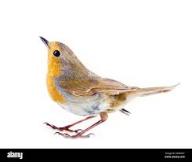

Bienvenue sur notre site des Oiseaus si c'etait un vrai site ,
ce serait l'endroit ideal pour venir en apprendre davantage sur l'observation des oiseaus, que vous
soyez un debutant cherchant a apprendre comment s'initier a l'observation des oiseaus,
ou un expert voulant partager des idées, des conseils et des photos avec d'autres personnes ayant la même passion.
Alors ne perdez pas de temps !
Regardez ce dont vous avez besoin, puis eteignez cet ordinateur et sortez au grand air regarder les oiseaus !
